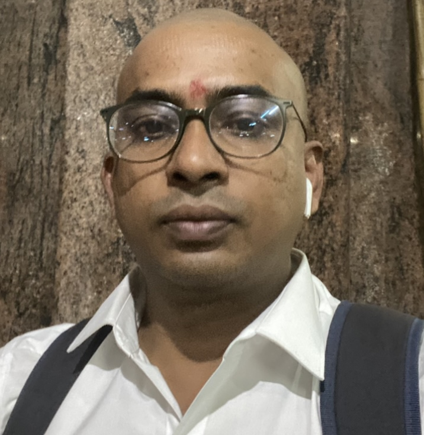

MY RESUME

Summary
Looking for a great job in multinational company, where i can put my skills to test.
Education
-
X class from Jairam public school with 80% marks in the year of March 2003
-
XII in MPC with 90% aggregate in Srichaitanya Junior college
under board of intermediate education, Andhra Pradesh in the year 2005.
-
Graduation in Mechanical engineering with 7.89 CGPA in Andhra University College
of Engineering in the year 2010.
-
Post Grauation in Mechanical Design in Biral Institute of Technology, Pilani in the year 2021.
Work Experience
-
Worked as Engineer Trainee in HRDC from Year 2011-2012
-
Worked as Engineer in Compressor Testing department from Year 2012-2016
-
Worked as Senior Engineer in compresso testing department from Year 2016-2020
-
Worked as Deputy Manager in Compressor Testing department from Year 2020-2023
-
Workin as manager from compressor testing department from the year 2023-Present
Skills
-
Expert in Vibration analysis and diagnosis
-
Expertise in balancing and
-
Expertise in compressor and steam turbine testing and diagnosis
-
Expertise in performance evalutaion of centrifugal compressor
Hobbies
Contact Details